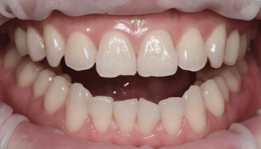
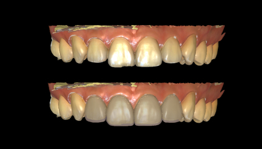
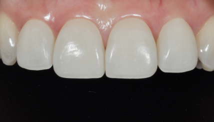

디어네이트가 특별한 이유
치료 전,
결과를 미리 확인하세요.
디지털 진단을 통한
프리뷰(pre-view) 시스템
라미네이트는 특성상 치료 후
수정이 매우 어려운 치료입니다.
디지털 진단을 통한 충분한 소통으로
만족스러운 결과물을 완성합니다.

1초진

현재 치아 상태, 원하는 디자인, 삭제 여부,
개선 사항 등 충분한 소통으로 진단합니다.

2디지털 진단
3D 구강스캐너로 치아 데이터를
정확하게 채득하여 설계합니다.

3진단 모형 제작
최종 보철물과 동일한 디자인의 pre-view 전용
레진 라미네이트를 제작하여 미리 확인하며
최종 디자인을 함께 결정합니다.